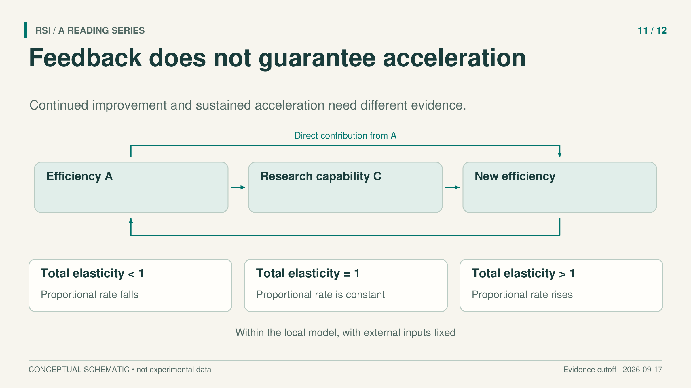
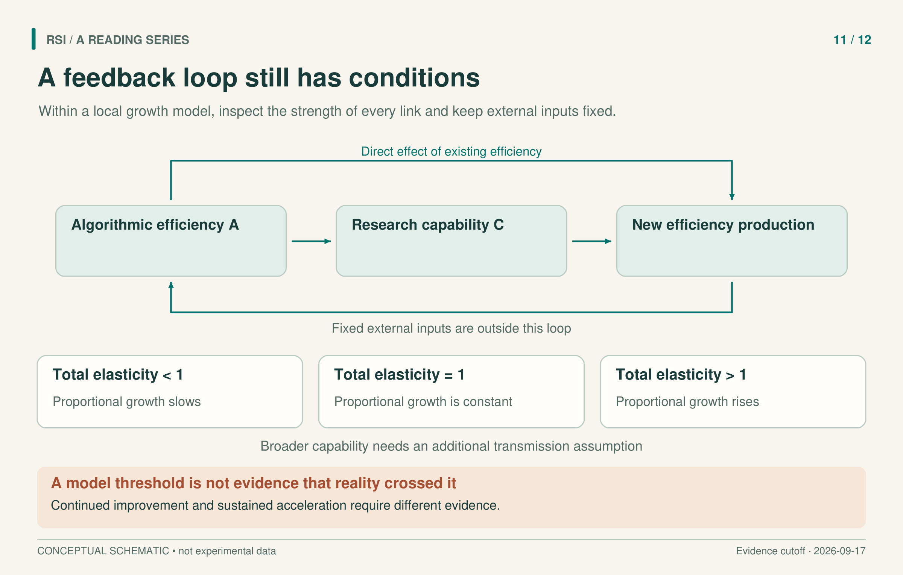

Imagine a research system that finds useful improvements every round. Its newest version is better than its predecessor, and that helps with the next round. Yet each further percentage gain takes longer to obtain. Improvement continues while proportional growth slows.
This hypothetical case exposes a missing step in many arguments about recursive self-improvement. A positive feedback loop says that progress can help produce more progress. Sustained acceleration requires a claim about how strongly that help grows relative to what has already been achieved.

To discuss acceleration, specify the quantity whose growth rate is increasing.
Separate accumulated efficiency from new efficiency
The Economics of Recursive Self-Improvement, by Cunningham and colleagues, makes this distinction explicit. Its algorithmic efficiency variable, A, is the inverse of the training compute needed to reach a given capability. Reaching that same capability with less compute means a larger A.
The fixed capability target matters. A higher benchmark score with the same training budget is not automatically a direct measurement of this inverse-compute quantity. An empirical analysis would need a way to compare the compute required for a common capability target.
Now distinguish three quantities:
| Quantity | Meaning |
|---|---|
A |
The accumulated level of algorithmic efficiency. |
A_dot |
New algorithmic efficiency produced per unit time. |
g = A_dot / A |
The proportional growth rate of efficiency. |
The denominator explains why more output per unit time need not mean a rising growth rate. As the accumulated efficiency level grows, a given addition becomes a smaller fraction of it. Even an increasing addition can fail to keep pace with the level.
In this model, self-sustaining acceleration means that g rises with A while external inputs are fixed. It is a particular definition of acceleration, tied to algorithmic efficiency. It should be stated before discussing any threshold.
A simple power law makes the distinction visible
For a teaching example, suppose new efficiency is produced according to:
A_dot = k × A^p, with k > 0
This is an illustrative assumption, not a fitted law for current AI. Dividing by A gives:
g = k × A^(p − 1)
If 0 < p < 1, a more efficient system produces more new efficiency per unit time. Feedback is positive. But the proportional growth rate falls, because the new output grows more slowly than the accumulated level. If p = 1, proportional growth stays constant. If p > 1, it rises within this assumed relationship.
This example explains why the important threshold is one rather than zero. The general model does not require a single power law to hold forever. It expresses the same comparison through a local elasticity: the percentage response of new-efficiency production to a percentage change in existing efficiency.
The feedback has a direct path and a capability path
Existing algorithmic efficiency can affect further research directly. It can also improve a research capability, C, which then helps produce further algorithmic advances. Cunningham and colleagues combine these paths as:
E = e_direct + e_research × e_capability
Here e_direct describes the direct response of A_dot to A, holding capability and the other inputs fixed. e_capability describes how C responds to A. e_research describes how A_dot responds to C. The product captures the two-step path through capability; the sum combines it with the direct path.
The product also identifies two different ways the indirect path can weaken. Efficiency might stop adding much research capability, or extra research capability might stop adding much new efficiency. For example, experiment capacity could constrain the second relationship even while the first stays strong. This is an implication of the model: observing one strong edge is insufficient to establish a strong two-step loop.
An elasticity is a local proportional sensitivity. Roughly, it asks how many percent an output changes for a small one-percent input change, with the relevant other inputs held fixed. It is not simply a correlation between two benchmark curves.
With positive, differentiable production functions and fixed external inputs, differentiating the growth-rate definition yields:
d log(g) / d log(A) = E − 1
Consequently, E > 1 gives a rising proportional growth rate at that point. E = 1 gives a locally unchanged rate, and E < 1 gives a falling rate. This is a condition inside the model, not evidence that an existing AI system has crossed the threshold. Source

The threshold concerns a local model with fixed external inputs. A further relationship is needed to connect research capability to broader capability.
A threshold crossed once may not stay crossed
Elasticities can change as the system changes. A procedure that was valuable when one bottleneck dominated can become less useful when another input constrains progress.
Consider an illustrative research group with a fixed capacity to run experiments. Better proposal generation may initially improve the experiments it chooses. After that improvement, generating still more proposals need not increase the number or informativeness of experiments that can actually be completed. The example supplies an intuition for complementary inputs; it is not a measured ceiling from the paper.
The economic analysis considers human labor, experiment or inference compute, training compute, and data as possible complementary constraints. Fixing these external inputs helps isolate the feedback mechanism. If a later run also receives more compute or human assistance, its improved outcome does not by itself identify a stronger self-sustaining loop.
A local threshold therefore cannot be extended across all future states without evidence about how the response changes. The paper's uncertain research elasticities and calibration do not provide a determination that real systems already sustain acceleration. Nor does the threshold alone establish a finite-time singularity.
Narrow research capability needs a bridge to broader effects
The model also distinguishes a narrow capability that assists algorithmic research from a broader capability associated with economic output. A strong loop involving the narrow capability does not automatically produce the same acceleration in the broader one. The broader condition additionally depends on how the sensitivity of broad capability to efficiency changes as efficiency grows.
This has a useful parallel in Chalmers's analysis. He separates self-amplification from another capability of interest and requires an additional tracking relationship to connect them. The comparison is analytical: the two papers are not independent experiments showing that every important capability accelerates together.
For a concrete evaluation, first define the common capability target and the efficiency measure. Then compare the additional improvement obtained per unit time or resource while recording external inputs. Repeat at different starting capability levels, and inspect where the research process spends its resources. These are proposed measurements, not results established here.
For example, a cheaper way to reach a fixed target may change A, while a higher score at a new target changes what is being measured. Recording target identity keeps those observations from being silently joined into one efficiency series. Record unsuccessful research work too, because the rate concerns what the full process produces over time.
A sequence of better systems can support continued improvement. To support sustained acceleration, it must also show how the rate changes, at what cost, and under which inputs. Each link in that stronger claim needs its own evidence.
Sources
- Cunningham et al., The Economics of Recursive Self-Improvement, v1, 2026.
- Chalmers, The Singularity: A Philosophical Analysis, 2010.
This article adapts a book with a literature cutoff of September 17, 2026. The numerical thresholds are analytical conditions, not measured claims about current systems.